Géographie et éducation à la citoyenneté
02 / 11 territoires
La ville patrimoniale
Territoire urbain · Local · La conservation du patrimoine en milieu urbain
- aménagement
- banlieue
- changement
- concentration
- conservation
- continuité
- densité
- étalement urbain
- patrimoine
- restauration
- site
- urbanisation
- Québec intra-muros (obligatoire)

Mise en contexte
Une ville patrimoniale cherche à protéger des lieux qui portent la trace de son passé. Certaines demandent à l'UNESCO de les reconnaître comme villes du patrimoine mondial, une reconnaissance qui vise à préserver la diversité culturelle de la planète. Cette protection crée des enjeux d'organisation particuliers : il faut conserver le patrimoine dans une ville qui continue de grandir, et composer avec les contraintes du site où elle a été bâtie. Sur cette page, il sera question de Québec intra-muros, c'est-à-dire de la partie du Vieux-Québec située à l'intérieur des remparts.
Concepts à l'étude
- Aménagement : l'ensemble des interventions par lesquelles on organise un territoire. Dans une ville patrimoniale, il faut aménager sans effacer ce que l'on cherche justement à conserver.
- Banlieue : une agglomération située autour de la ville principale, assez éloignée pour avoir son indépendance politique, assez rapprochée pour participer à sa vie sociale et économique.
- Changement : l'état de ce qui évolue, se modifie et ne reste pas identique. Un bâtiment ancien peut changer d'usage sans changer d'apparence.
- Concentration : le regroupement d'un grand nombre d'habitants, de bâtiments et d'activités sur un même territoire.
- Conservation : l'action de maintenir un bien, un site ou un paysage dans son état, de manière à préserver ses richesses patrimoniales.
- Continuité : le caractère de ce qui se poursuit dans le temps et dans l'espace, de ce qui est perçu comme un tout.
- Densité de population : le nombre d'habitants par kilomètre carré. On l'obtient en divisant la population totale par la superficie totale.
- Étalement urbain : l'expansion du territoire urbain en périphérie des villes, produite principalement par le développement des banlieues et la construction des autoroutes.
- Patrimoine : tout objet ou tout ensemble, naturel ou culturel, qu'une société reconnaît pour sa valeur historique, esthétique ou culturelle, et qu'elle choisit de protéger, de mettre en valeur et de transmettre.
- Restauration : l'opération qui consiste à redonner sa forme première à un édifice ou à une oeuvre, à l'aide de connaissances et de moyens techniques appropriés.
- Site : en matière de patrimoine et selon l'UNESCO, l'emplacement d'une réalisation humaine, ou d'une réalisation à la fois humaine et naturelle.
- Urbanisation : le phénomène par lequel une population se concentre de plus en plus dans les villes, ce qui entraîne le développement de la ville, de ses services et de ses activités.
Qu'est-ce que le patrimoine
Le patrimoine désigne tout objet ou tout ensemble, naturel ou culturel, qu'une société reconnaît pour sa valeur unique, historique, esthétique ou culturelle. De cette reconnaissance découle une nécessité : le protéger, le conserver, se l'approprier, le mettre en valeur et le transmettre. Le patrimoine n'est donc pas une qualité que les choses possèdent d'elles-mêmes. C'est une décision. Une société regarde un bâtiment, un paysage ou un objet, lui reconnaît une valeur et choisit de le garder. Ce qui était hier une vieille bâtisse peut devenir demain un monument protégé, et l'inverse arrive aussi.
Le patrimoine culturel
Les sites patrimoniaux culturels ont été façonnés par les humains. Il peut s'agir de bâtiments, de places, de fortifications, de quartiers entiers ou d'oeuvres d'art, conçus par des êtres humains et jugés d'une valeur inestimable pour la société. Le Vieux-Québec appartient à cette catégorie.
Le patrimoine naturel
Les sites patrimoniaux naturels sont des paysages et des milieux que les humains n'ont pas façonnés. Ce sont des sites dont la valeur est jugée exceptionnelle pour la science et pour la biodiversité, mais aussi pour leur beauté. Une forêt ancienne, un récif corallien ou un massif montagneux peuvent en faire partie.
Pimachiowin Aki, les deux à la fois
Certains sites ne se rangent ni tout à fait dans une catégorie ni tout à fait dans l'autre. Pimachiowin Aki, qui signifie « le pays qui donne la vie » en anishinaabemowin, la langue ojibwée, est le premier site mixte du Canada inscrit au patrimoine mondial.
Ce vaste écosystème de forêt boréale intacte, dont des communautés autochtones assurent l'intendance, combine des valeurs patrimoniales naturelles et culturelles. Il constitue un exemple remarquable de l'indivisibilité de l'environnement et de l'identité culturelle des peuples autochtones : chez les Anishinaabeg, le territoire et la culture ne se pensent pas séparément.
L'UNESCO et la Convention de 1972
Un organisme participe à toutes les étapes qui mènent à nommer, à protéger et à restaurer les éléments du patrimoine mondial : l'UNESCO, l'Organisation des Nations unies pour l'éducation, la science et la culture. Sa mission en matière de patrimoine consiste surtout à encourager les pays à sélectionner, à protéger et à conserver les éléments de leur patrimoine. Pour mieux y parvenir, l'UNESCO a mis sur pied la Convention pour la protection du patrimoine mondial en 1972. Cette convention permet aux pays membres d'inscrire certains biens historiques, culturels et naturels sur la Liste du patrimoine mondial.
Une inscription n'est pas qu'un honneur. Elle engage le pays à protéger le site, à rendre compte de son état et à accepter un regard extérieur sur sa gestion.
L'Organisation des villes du patrimoine mondial
Fondée le 8 septembre 1993 à Fès, au Maroc, l'Organisation des villes du patrimoine mondial réunit les villes qui abritent sur leur territoire un site inscrit par l'UNESCO. Son secrétariat général se trouve à Québec. Elle poursuit trois objectifs :
- favoriser la mise en oeuvre de la Convention du patrimoine mondial
- encourager la coopération et l'échange d'information et d'expertise en matière de conservation et de gestion du patrimoine
- développer un sens de la solidarité parmi ses villes membres
Québec intra-muros
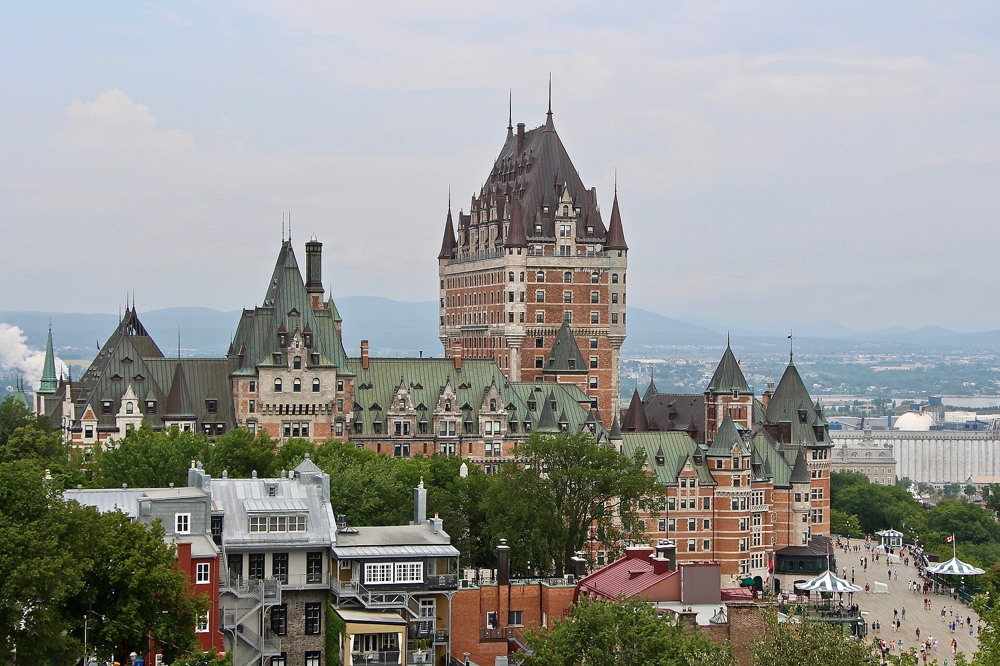
Source
Thomas1313, Château Frontenac, Vieux-Québec, Wikimedia Commons. Licence : Creative Commons BY-SA 4.0.Intra-muros signifie à l'intérieur des murs. Les murs du Vieux-Québec sont des remparts qui s'étendent sur environ 4,6 kilomètres et qui enserrent la Haute-Ville. Une première enceinte est bâtie dès 1690. Celle que tu vois aujourd'hui est reconstruite plus à l'ouest à partir de 1745, sur les plans de l'ingénieur Gaspard-Joseph Chaussegros de Léry, puis agrandie par les Britanniques dans les années 1820 et 1830. Quatre portes, trois tours Martello et une citadelle en forme d'étoile complètent l'ensemble.
Québec a été fondée en 1608 par Samuel de Champlain, ce qui en fait la plus vieille ville francophone d'Amérique du Nord. C'est pour donner un statut particulier à son patrimoine urbain que l'UNESCO a inscrit l'arrondissement historique du Vieux-Québec sur la Liste du patrimoine mondial, en 1985. Le bien protégé couvre 135 hectares.
Le Cap Diamant, un site qui commande tout
Le Cap Diamant est une falaise d'environ 90 mètres de haut. Il a d'abord servi de protection naturelle : son relief rendait la ville difficile à attaquer. Un seul côté était vulnérable, et c'est là que l'on a bâti les remparts.
Ce cap partage aussi le Vieux-Québec en deux. La Haute-Ville occupe le sommet, la Basse-Ville s'étend à ses pieds, le long du fleuve. Cette séparation n'était pas seulement physique : la Haute-Ville accueillait les bâtiments religieux et administratifs, la Basse-Ville les activités commerciales et portuaires. Le site a donc décidé de l'organisation de la ville, et il continue de le faire, puisque tout déplacement entre les deux passe encore par un escalier, une côte ou le funiculaire.
Les traces de trois régimes
La valeur patrimoniale du Vieux-Québec tient à une concentration rare : plusieurs époques y ont laissé leurs traces sans que les suivantes les effacent. On y lit le régime français, le régime britannique et la période contemporaine, souvent dans la même rue.
La place Royale
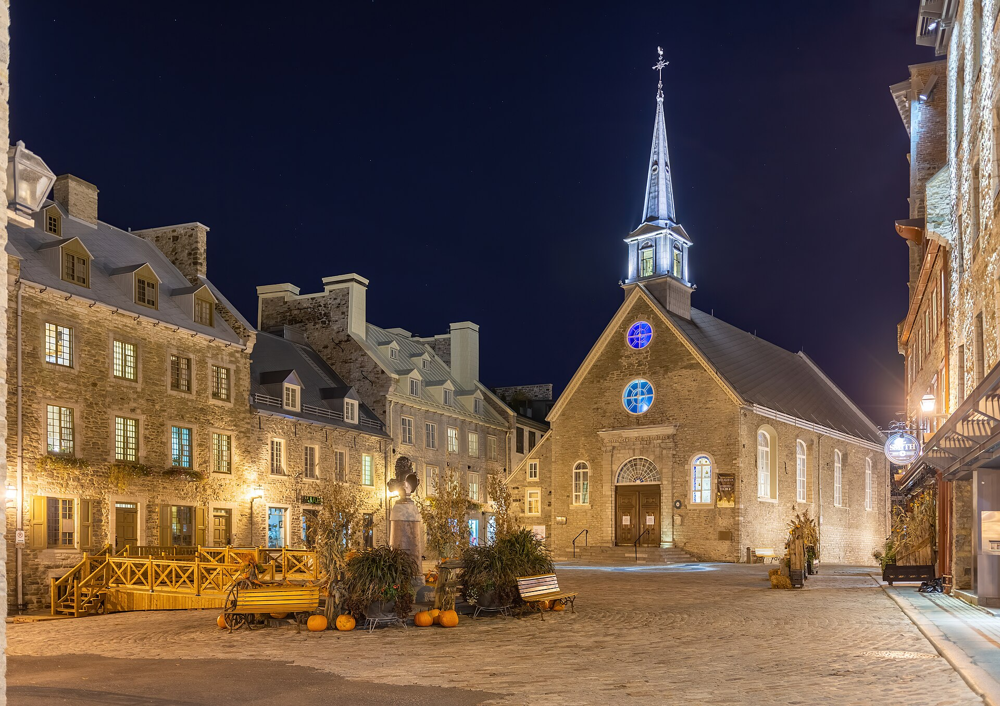
Source
Wilfredor, Place Royale at night, Vieux-Québec, Quebec ville, Canada, Wikimedia Commons. Licence : Creative Commons Zero.C'est là que Champlain a fondé Québec en 1608. On y trouve l'église Notre-Dame-des-Victoires, commencée en 1687 et achevée en 1723, souvent présentée comme la plus vieille église de pierre d'Amérique du Nord, ainsi qu'un buste du roi Louis XIV. Son nom rappelle deux victoires françaises, en 1690 et en 1711.
Un vaste chantier de restauration s'ouvre à la fin des années 1950. La moitié de la place est refaite dans un esprit Nouvelle-France, tout en pierre, du côté du fleuve. Cette vision est contestée, et la suite des travaux respecte davantage l'évolution réelle des bâtiments : du côté de la falaise, les édifices gardent leurs influences britanniques, la brique notamment. La place raconte donc deux façons de restaurer.
Le monastère des Ursulines
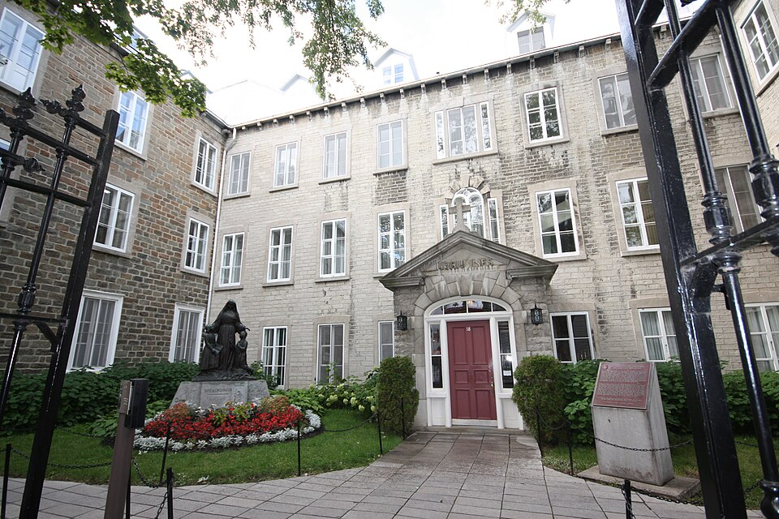
Source
Alexbruchez, Le monastère des ursulines, Wikimedia Commons. Licence : Creative Commons BY-SA 3.0.Fondé en 1639, le monastère est la plus ancienne institution d'enseignement pour les filles en Amérique du Nord. Il est construit et reconstruit entre le 17e et le 20e siècle, et plusieurs bâtiments remontent aux premières décennies. Lors du siège de Québec, en 1759, il est en partie détruit par les bombes. Après la capitulation, les religieuses acceptent de soigner les officiers et les soldats britanniques, parce que l'Hôtel-Dieu et l'Hôpital général débordent. En échange, elles obtiennent la permission de reprendre leur enseignement. Le monastère a toujours été un lieu d'enseignement, et un musée y a été aménagé.
La place d'Armes
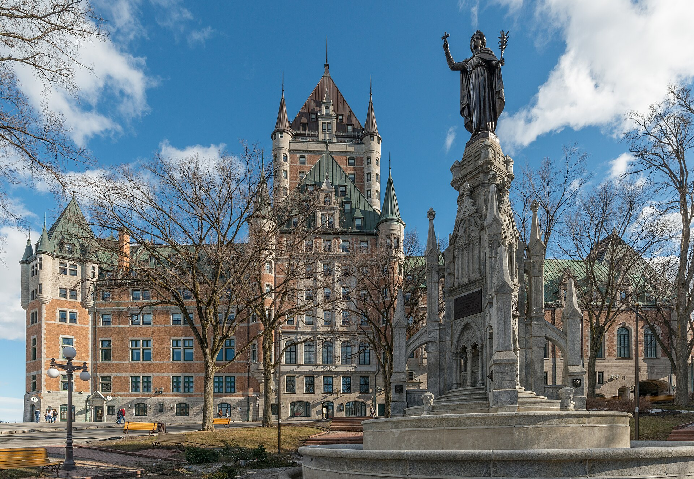
Source
DXR, Château Frontenac, Québec, North view from Place des Armes 20170413 1, Wikimedia Commons. Licence : Creative Commons BY-SA 4.0.Aménagée entre 1640 et 1648 par le gouverneur Charles Huault de Montmagny, elle sert de terrain d'exercice à l'armée française, puis aux troupes britanniques après 1760. Elle a porté beaucoup de noms. En 1832, on la ceinture d'une chaîne pour protéger sa pelouse et ses arbres, ce qui lui vaut d'être appelée le Ring par les anglophones et le Rond de chaîne par les francophones. Elle devient un parc public en 1865 et retrouve progressivement son nom. Le monument de la Foi y est érigé en 1915.
La maison Jacquet
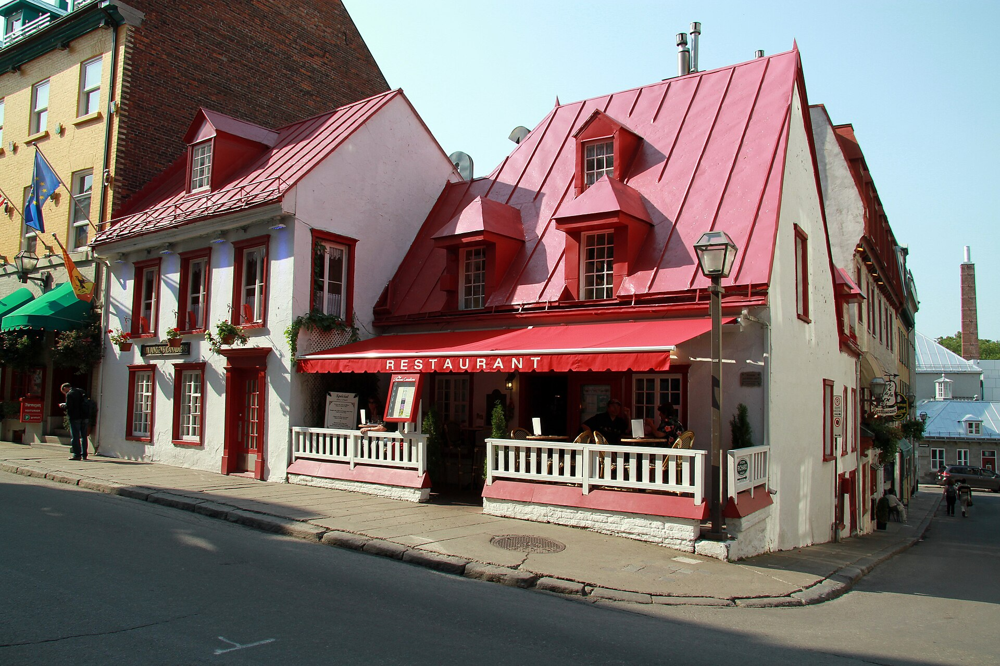
Source
Malimage, 07175 Maison François-Jacquet-Dit-Langevin - 001, Wikimedia Commons. Licence : Creative Commons BY-SA 3.0.Vers 1675, la plupart des habitants vivent en Basse-Ville, près du fleuve. Quelques-uns obtiennent pourtant des terrains au sommet du cap. C'est le cas du maître couvreur François Jacquet dit Langevin, à qui les Ursulines concèdent un terrain en 1674. Il y bâtit une maison de bois, puis la reconstruit en pierre vers 1690. Ce carré de maison est l'un des rares à avoir gardé les caractéristiques de la Nouvelle-France. Il se trouve aujourd'hui en retrait de la rue, parce que le tracé de la rue Saint-Louis a été modifié depuis. Longtemps une résidence, le bâtiment a été classé monument historique en 1957 et abrite maintenant un restaurant.
Les fortifications
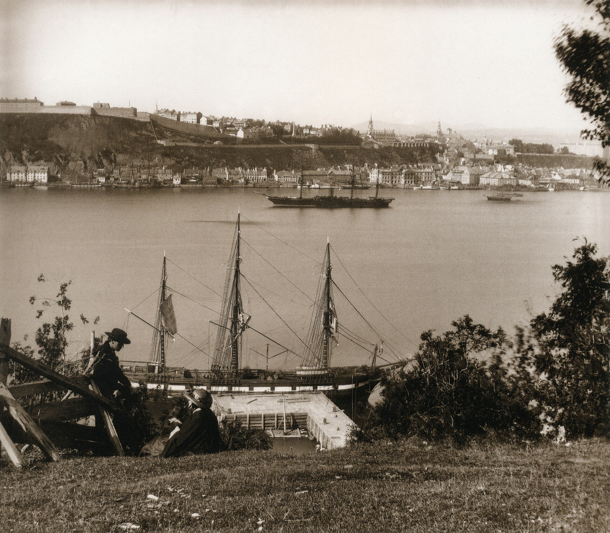
Source
William England, 88 William England - Upper City and citadel of Quebec, Wikimedia Commons. Licence : Domaine public.Les fortifications comprennent les remparts, les portes et les constructions défensives comme les casernes et les postes de garde. Commencées en 1745 par les Français pour se protéger des Britanniques, elles sont complétées après 1760 par les Britanniques eux-mêmes, cette fois contre une éventuelle invasion américaine. Le même mur a donc servi deux camps opposés. Le système de défense de Québec s'est construit sur plus de deux siècles et demi, de 1608 à 1871. Il en reste aujourd'hui les 4,6 kilomètres de remparts, la Citadelle, trois tours Martello et le fort numéro 1 à Lévis.
La Citadelle
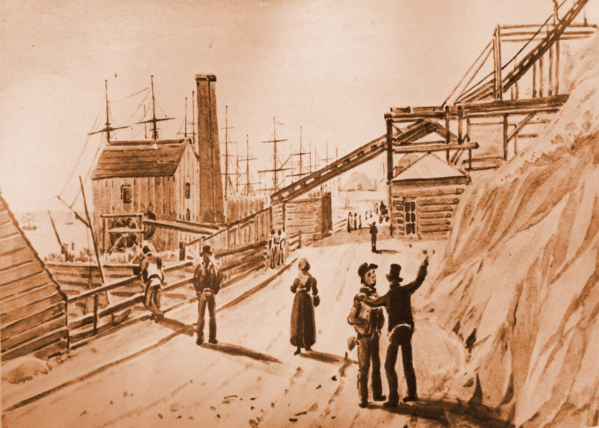
Source
James Pattison Cockburn, Le plan incline de la citadelle de Quebec - James Pattison Cockburn - 1830, Wikimedia Commons. Licence : Domaine public.Cette forteresse est bâtie par l'armée britannique à partir de 1820, sur le point le plus haut du Cap Diamant, de manière à dominer les environs. Les travaux se poursuivent jusque vers 1850. Sa forme en étoile et sa muraille de pierre en font un ouvrage militaire classique, conçu pour parer une attaque américaine. Les Britanniques l'occupent jusqu'en 1871, année où ils la remettent au gouvernement canadien. Elle sert encore de quartier général au Royal 22e Régiment, abrite un musée consacré à son histoire et constitue la résidence secondaire du gouverneur général du Canada.
La terrasse Dufferin
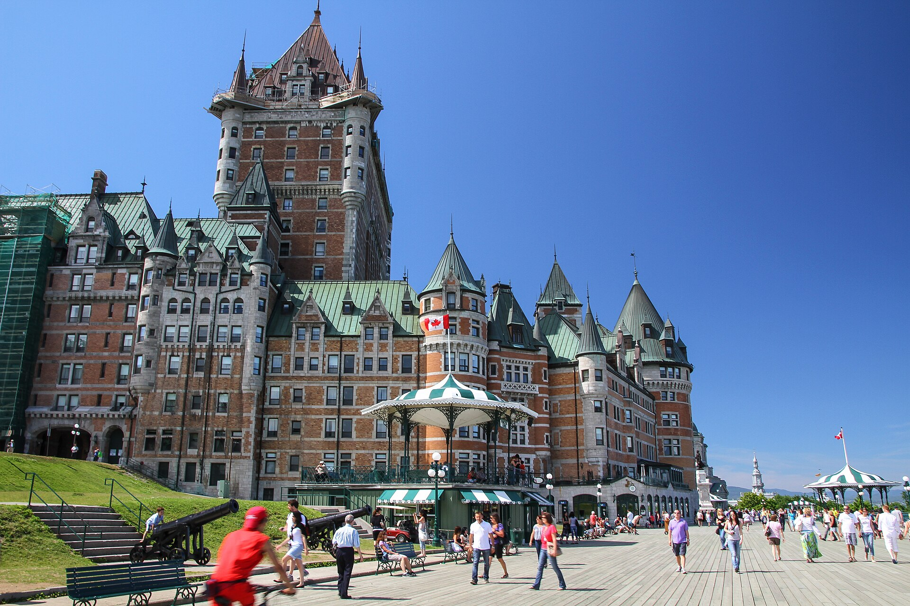
Source
Pierre-Olivier Fortin, La terrasse Dufferin et le Château Frontenac, Québec, Wikimedia Commons. Licence : Creative Commons BY-SA 3.0.C'est une promenade de bois construite au-dessus des remparts, sur les ruines du château Saint-Louis, et inaugurée en 1879. Longue d'environ 425 mètres, perchée à une soixantaine de mètres au-dessus du fleuve, elle relie le Château Frontenac à la Citadelle et offre une vue sur la Basse-Ville. Elle est donc plus ancienne que le Château Frontenac lui-même, ouvert en 1893.
Conserver, restaurer, reconstituer
Entretenir un arrondissement historique demande des travaux constants, et ces travaux ne sont pas les mêmes selon l'état du bâtiment. Un site historique qui n'est pas détérioré demande surtout de la protection : il faut défendre les matériaux exposés aux intempéries, réparer ce qui s'use et remplacer les composantes en fin de vie. On conserve.
Un site détérioré demande davantage. Il faut ajouter ou transformer des parties du bâtiment existant, tout en respectant les caractéristiques du bâtiment d'origine. On restaure. Quand une partie a complètement disparu, on peut la rebâtir à partir de documents écrits ou d'images anciennes. On reconstitue : les portes Saint-Louis, Saint-Jean et Prescott ont toutes les trois été refaites de cette façon. Dans les trois cas, le but reste le même : la conservation. La restauration et la reconstitution ne sont pas des fins en elles-mêmes, ce sont des moyens de faire durer un ensemble.
Entre continuité et changement
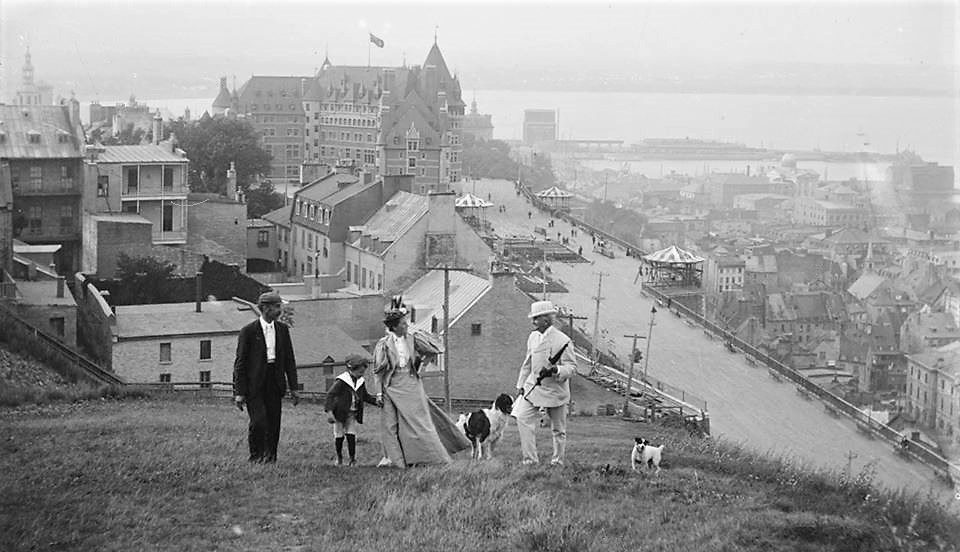
Source
Photographe inconnu, don : Herbert A. French; 1947, National Photo Company Collection, Library of Congress Prints and Photographs Division Washington, D.C. 20540 USA. Cote : LC-DIG-npcc-00056., Vue vers le Chateau Frontenac et la terrasse Dufferin, vers 1895, Wikimedia Commons. Licence : Domaine public.Les bâtiments du Vieux-Québec n'ont pas tous suivi le même chemin. Certains ont gardé la vocation pour laquelle ils avaient été conçus. Le Séminaire de Québec en est l'exemple le plus net : ses bâtiments ont traversé les siècles et il exerce toujours une fonction d'enseignement et une fonction religieuse. C'est une continuité. D'autres ont changé d'usage sans changer d'allure. La maison Jacquet était une résidence, elle est aujourd'hui un restaurant. Le bâtiment est le même, ce que l'on y fait ne l'est plus. C'est un changement.
Cette distinction compte, parce qu'elle donne deux réponses possibles à la même question. Faut-il figer un quartier ancien dans son état, au risque d'en faire un décor sans habitants? Ou faut-il accepter que ses bâtiments servent à autre chose, au risque de perdre une part de ce qu'ils racontaient?
Concilier le patrimoine et le tourisme
Le Vieux-Québec reçoit chaque année beaucoup plus de visiteurs qu'il ne compte de résidents. Pour les accueillir, l'arrondissement s'est aménagé : il a fallu leur permettre de séjourner, de manger, de circuler et d'atteindre les attraits. Ces aménagements se glissent entre des bâtiments protégés, ce qui limite fortement ce que l'on peut construire.
L'escalier du Casse-Cou
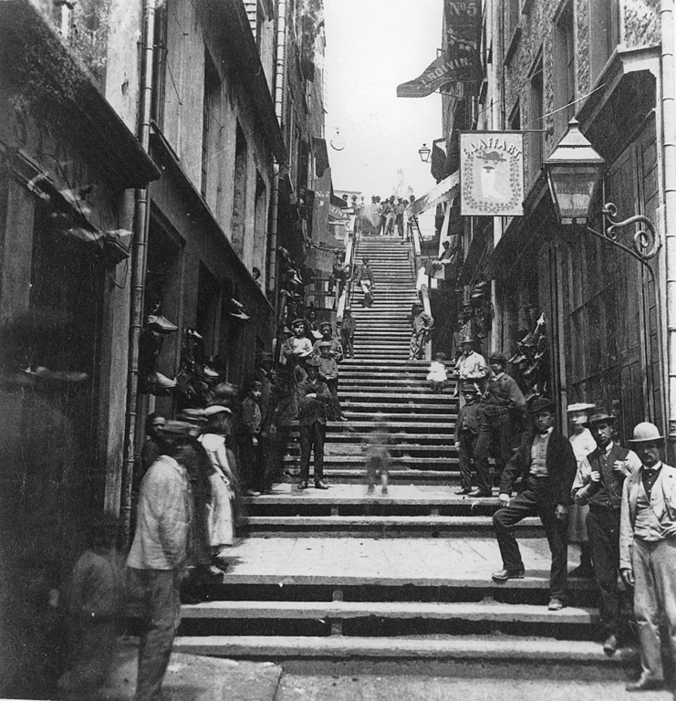
Source
Louis-Prudent Vallée (Note: The page MP-0000.307.2 of the McCord Museum attributes it to James George Parks, but that looks like a mistake on that page. The page MP-0000.321.2 of the same McCord Museum attributes it to Louis-Prudent Vallée [1] . It is also attributed to Louis-Prudent Vallée by the National Gallery of Canada [2] , by the Musée national des beaux-arts du Québec [3] , by Library and Archives Canada [4] and by Bibliothèque et Archives nationales du Québec [5] . For comparison, the photograph of the stairs by James George Parks can be seen at this link .), Breakneck Steps, Quebec City, 1870, Wikimedia Commons. Licence : Domaine public.Près d'une trentaine d'escaliers relient la Basse-Ville à la Haute-Ville. L'escalier du Casse-Cou est le plus célèbre et vraisemblablement le plus ancien de Québec. Son nom dit assez ce que le dénivelé du Cap Diamant impose à ceux qui le montent à pied.
Le funiculaire
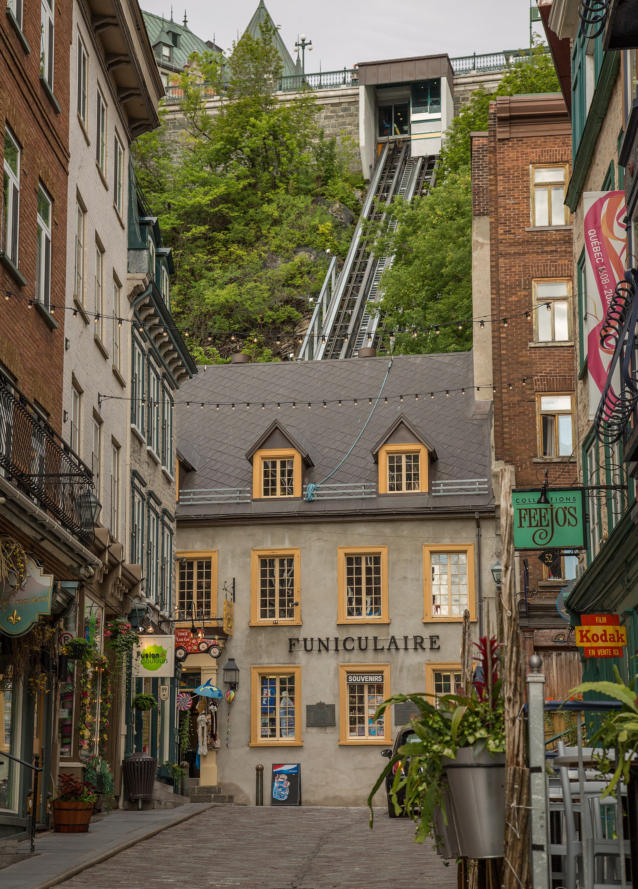
Source
Tony Webster from Portland, Oregon, United States, Funiculaire, Vieux-Quebec (14808597653), Wikimedia Commons. Licence : Creative Commons BY 2.0.Le funiculaire du Vieux-Québec est un ascenseur incliné en service depuis 1879. Sa voie mesure 64 mètres pour un dénivelé de 59 mètres, avec une pente qui atteint 100 pour cent. Il relie la rue du Petit-Champlain, dans la Basse-Ville, à la terrasse Dufferin. C'est un aménagement moderne posé dans un décor ancien, et c'est exactement ce qui le rend intéressant à discuter.
Le quartier du Petit-Champlain
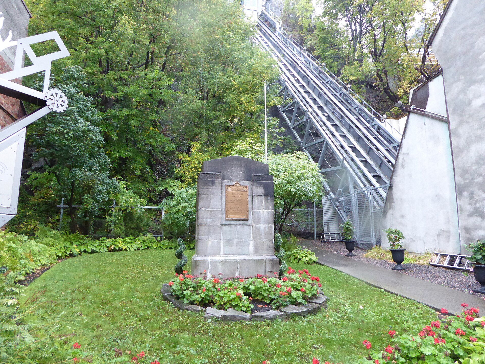
Source
Pierre André, Vieux Quebec. La rue du Petit-Champlain (9), Wikimedia Commons. Licence : Creative Commons BY-SA 4.0.Ce quartier tient son nom de sa rue principale. Il a été habité pendant des décennies par des ouvriers et des artisans. Il est aujourd'hui un secteur très fréquenté par les touristes, avec ses restaurants, ses boutiques et ses lieux d'animation. Le bâti n'a presque pas changé, la population qui l'occupe, si. Un terminal de croisière, aménagé dans la Basse-Ville, débarque par ailleurs des croisiéristes au pied même du quartier historique.
Les enjeux d'une ville patrimoniale
L'enjeu de la conservation est d'abord une question de moyens. Entretenir des bâtiments de pierre vieux de trois siècles coûte cher, exige des matériaux et des savoir-faire rares, et impose des règles strictes aux propriétaires. Rénover une fenêtre dans le Vieux-Québec n'est pas la même opération qu'ailleurs.
L'enjeu du site vient du Cap Diamant. Le dénivelé, les rues étroites héritées du 17e siècle et les remparts empêchent d'élargir une rue ou de creuser un stationnement. Le site qui a protégé la ville des envahisseurs la protège aujourd'hui des bulldozers, mais il complique aussi la vie quotidienne.
L'enjeu du tourisme est celui de l'équilibre. Les visiteurs font vivre le quartier et financent en partie son entretien, mais l'affluence use les lieux, et les commerces qui leur sont destinés remplacent peu à peu ceux qui servaient les résidents. Un quartier peut se vider de ses habitants tout en restant plein.
L'enjeu du patrimoine religieux se pose partout au Québec. Églises, chapelles et couvents ont été bâtis pour des communautés qui ont fondu. Que faire d'un bâtiment protégé dont l'usage a disparu? Le convertir, le vendre, le laisser vide ou le démolir sont autant de réponses, et chacune a ses partisans.